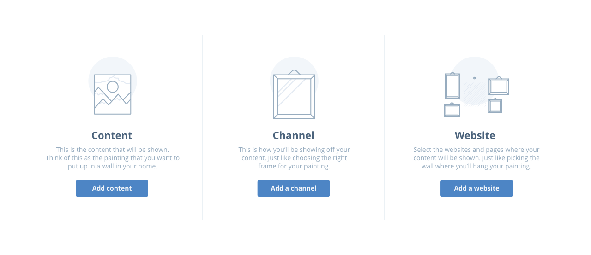
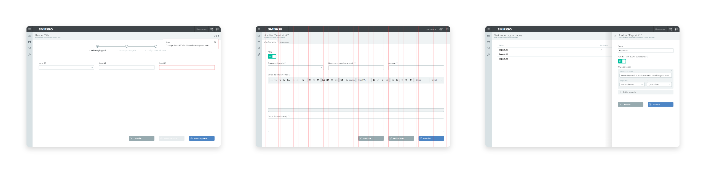

I joined the SMARKIO team in January 2015 to help prepare for a big product launch that was to happen later in the year.
SMARKIO was a sister company to Adclick, which I had joined a year prior as a Visual Designer. The product was to be comprised of a series of disparate tools developed for internal use to manage several types of marketing campaigns at Adclick but bundled into one single automated marketing suite.
During the months leading up to the launch, I had several objectives:
A lot of research was done to define the personas that would be using the product. This involved looking into how the tools were being used internally at Adclick and having many conversations with potential customers and early-access users.
In the end, we identified the three key personas:
This led to a focus on the user experience for the Marketing Executives and an additional layer of reporting and dashboards for the Marketing Supervisor.
Seeing that all the tools had been developed independently of each other, it was important for the product to present them in a way that made sense to the end-user.
We studied the different tools and their different synergies, and ended up splitting them into the chart:
| On-site | Off-site | |
|---|---|---|
| Content | Form Chat Click to call | Email SMS |
| Distribution method | Overlay Dynamic content | Workflow |
| Management and monitoring | Lead management Reporting Websites | |
This helped us organise the tools in a more logical sense and also helped us promote and suggest combinations for users who were not making full use of the entire suite.
Since the initial tools had been developed by internal use only, there was little time spent accounting for their ease of use.
To fix this, I made an effort to improve the user experience by introducing well-established patterns like wizard interfaces when creating new campaigns and spending time making the UI as consistent as possible using a proto-design system.
In the end, our product was a lot more user friendly than before, which led to less time spent by the account managers helping their accounts set up their campaigns.
During this time, I met with users regularly to get a bigger understanding of their problems and their goals, to validate our solutions, and to gather insights on how they were using the product.